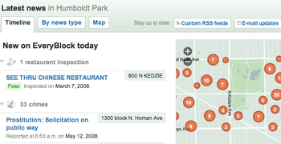
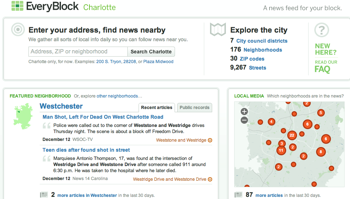

OpenLayers 2
OpenLayers 2
OpenLayers 2.x is not under active development any more. Go to http://openlayers.org/en/latest/doc/ to view the latest OpenLayers 3.x docs.
EveryBlock is a website that filters an assortment of local news by location so you can keep track of what’s happening on your block, in your neighborhood and all over your city. Made possible by a grant from the Knight Foundation, EveryBlock seeks to solve the problem of answering the question of “What’s happening in my neighborhood?” A key aspect of any local data problem is good maps – and when EveryBlock wanted maps, they used OpenLayers.
EveryBlock considered other existing Javascript APIs for their site, like the Google Maps Javascript API. However, EveryBlock wanted maps that looked like the rest of their site, using the same color scheme, style, and more. Paul Smith, co-founder of EveryBlock, in describing EveryBlock’s decision, explained that with Google Maps, “the core component—the map itself—is out of your hands.”
With OpenLayers, on the other hand, EveryBlock gets complete control: over styling, data, restrictions on usage, and more. Using OpenLayers, EveryBlock was able to create maps for their website that were in their control, rather than the control of the API provider.
Starting with the US Census bureau’s TIGER/Line dataset, EveryBlock used Mapnik to create attractive tiles – originally using TileCache, and moving to a custom tile generation/serving routine later on. OpenLayers was able to accomodate both of these needs, providing the support needed to create custom layer classes to load EveryBlock’s tiles from where they needed to be loaded from.
Another benefit of using the OpenLayers library was the ability to quickly and easily create customized controls that had the functionality that made sense for the application. By using CSS and easy to use map creation options, EveryBlock was able to create a minimal set of UI controls that allow quick and easy navigation of the map, with items styled in line with the rest of the site.
In addition to using built in functionality in OpenLayers, EveryBlock has been able to extend OpenLayers for displaying large quantities of data, using custom server side tools to create clusters of data. Using OpenLayers vector styling, they are then able to create automatically resizing features – using in-browser vector drawing support – to represent various items – news stories, photos, and more. By using the functionality in OpenLayers, EveryBlock is able to create compelling maps that tell stories, within the limited framework of the browser.
As EveryBlock has grown, its use of OpenLayers has changed. Paul Smith continues to support the use of OpenLayers for EveryBlock, saying that “OpenLayers is sophisticated enough by default for many applications, but its true power is in its design, which allows you to easily build customized solutions; it doesn’t fight with or hide JavaScript’s nature – an underrated but powerful language – allowing you to code new functionality with great economy.”
Using OpenLayers provided EveryBlock the functionality they needed in order to get their website up and running. Rather than using Google Maps, like so many other sites out there, EveryBlock was able to use open source components like OpenLayers and Mapnik with open data from the US Government to build a compelling mapping base layer. The ability to extend OpenLayers for support of new datasources, and use advanced OpenLayers functionality like vector drawing to save on server side image generation, and more, is a key aspect of the usability of the EveryBlock mapping interface.
For more information contact:
Paul Smith
Paul Smith is a co-founder and developer at EveryBlock. He has been creating sites and applications on the Web since 1994. He’s also co-creator of the Election Day Advent Calendar, and a founding member of Friends of the Bloomingdale Trail. He lives in Chicago, Illinois.